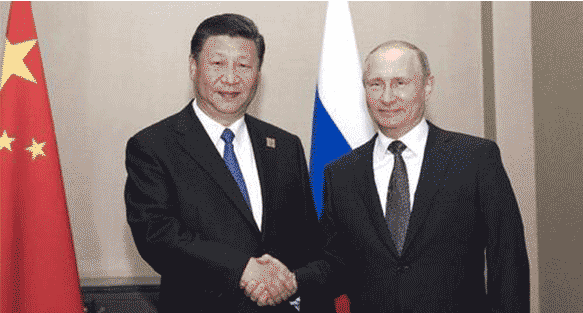

国家主席习近平在阿斯塔纳会见俄罗斯总统普京
新华社 2017-06-09 08:05
新华社阿斯塔纳6月8日电8日，国家主席习近平在阿斯塔纳会见俄罗斯总统普京。

习近平指出，不久前，我同普京总统在“一带一路”国际合作高峰论坛期间举行会晤，达成保持中俄全面战略协作伙伴关系高水平运行、加强两国全方位合作的重要共识。在当前复杂多变的国际形势下，中俄关系发展得好，对中俄各自发展振兴、对世界和平稳定都至关重要。双方要加大在涉及彼此核心利益问题上的相互支持，密切在推动“一带一路”建设同欧亚经济联盟对接取得更多实际成果，深化人文交流和民心相通，密切
际和地区事务中的协调和配合。习近平强调，上海合作组织正面临新的发展机遇和挑战。中俄两国应该加强沟通和协调，用进程中的作用坚定遵循“上海精神”，巩固成员国团结协作，维护地区安全稳定，加大务实合作力度，不断提升上海合作组织在国际和地区事务中的影响力，更多发挥上海合作组织在阿富汗国内和平与和解进程中